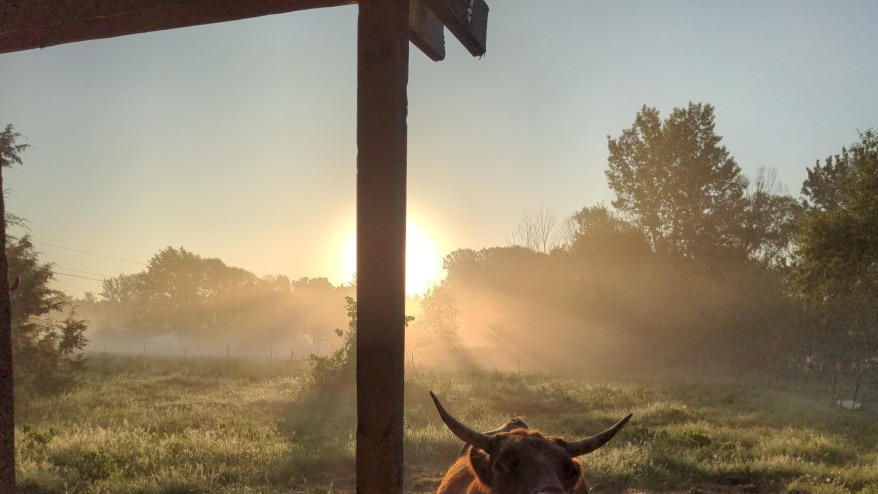

We’re a family farm raising heritage breed, grass-fed beef just south of Kansas City, MO. At His Hand Holler, we believe in natural stewardship and old-fashioned care.
Availability depends on the season. Check the latest on our “Available Now” page.
Email: holler@a.hall.win
Text: 816-793-0505 for visit times & address
Ore Rd, Harrisonville, MO